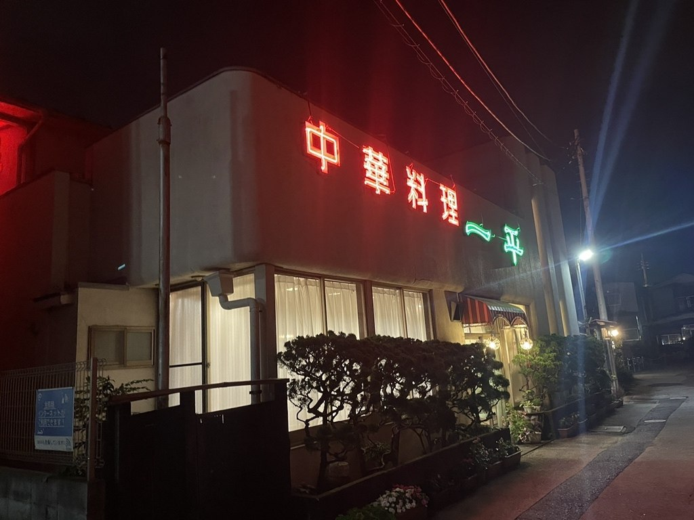
715円のラーメンと、8,800円からのふかひれの姿煮が、同じお品書きに載っております。
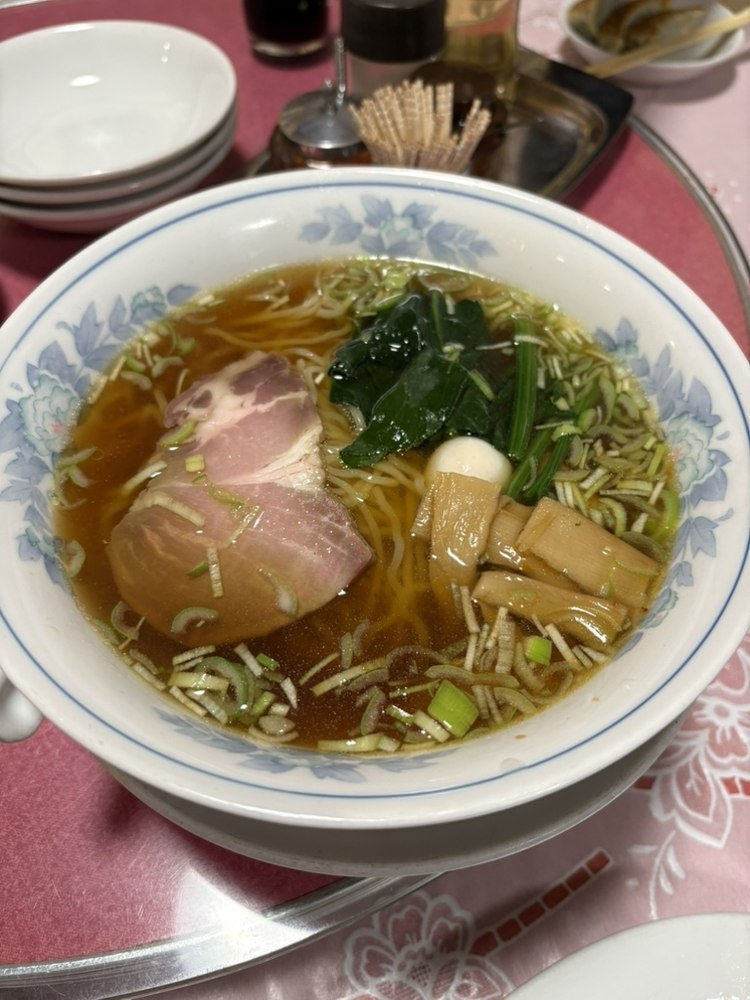
ラーメン
715円
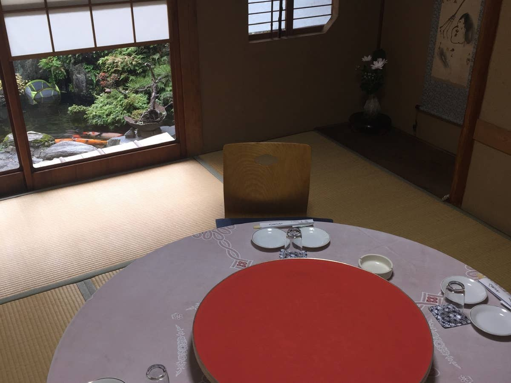
法事・ご会食
コース 3,500円より
| 営業時間 | 昼 11:30〜14:30（L.O. 14:00） 夜 17:00〜21:00（L.O. 20:30） |
|---|---|
| ランチ | 11:30〜13:00までのご提供です。900円（ライス大盛は1,000円）でお出ししております。 |
| 定休日 | 月曜日・第3火曜日1月・8月・12月は定休日が変わります。恐れ入りますが、お電話にてご確認くださいませ。 |
| 駐車場 | 店の東側の通り沿いに2台分ございます。お店まで歩いて20秒ほどです。 |
715円のラーメンから、蒸籠のシュウマイまで。古河でのお昼に、長くお使いいただいております。
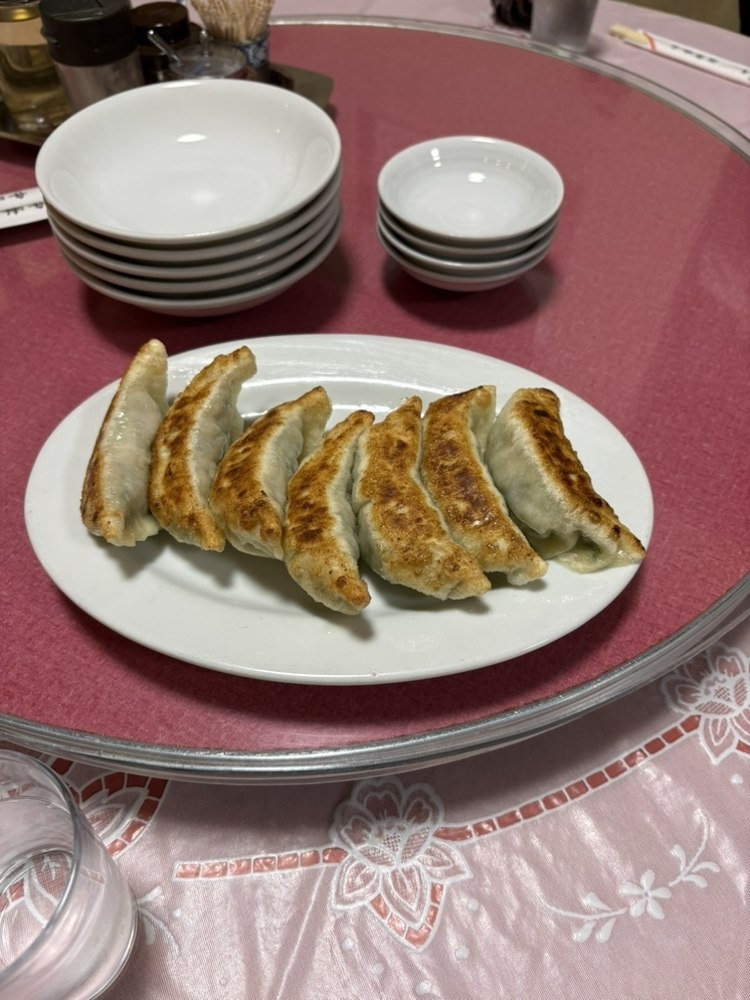
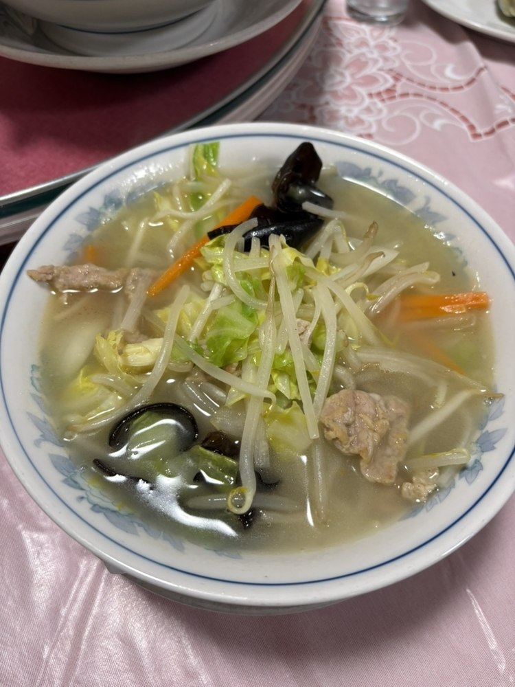
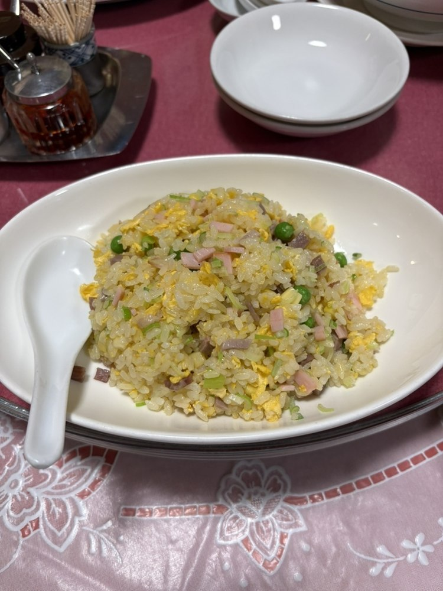
11:30から13:00までのご提供です。ライスの大盛りは1,000円になります。
離れの和室と、二階の広間をご用意しております。法事やご会食に、どうぞお使いくださいませ。
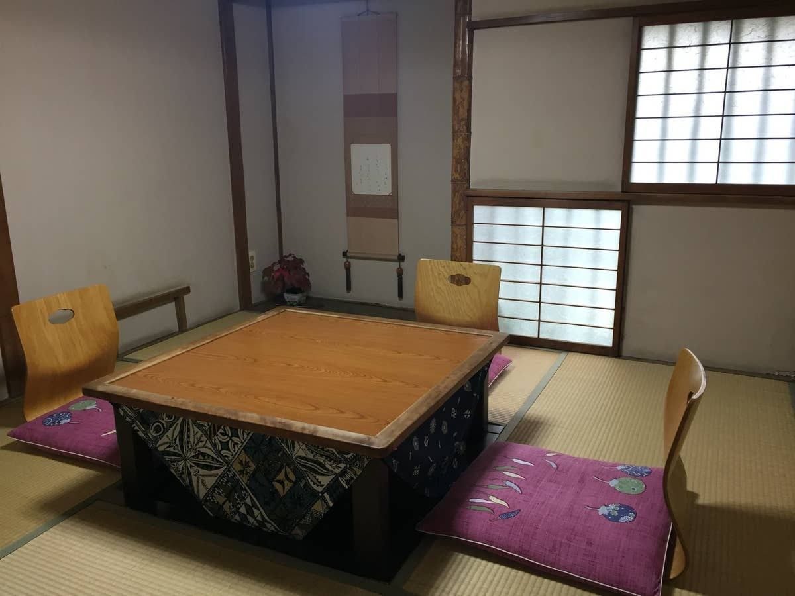
| 離れ和室 | 3室ございます（3〜6名様でご利用いただけます） |
|---|---|
| 二階の広間 | 二階に、20名様までの広間がございます。広さやしつらえは、お電話にて詳しくご案内いたします。 |
| コース | 3,500円・4,500円・6,000円の3種をご用意しております |
| 席料 | お一人様330円を頂戴しております |
| お飲み物 | お一人様1杯のご注文をお願いしております |
| 人数 | 2名様から20名様まで、承っております |
法事のご相談も、ご予約のお電話にてお申し付けくださいませ。
「こちらは創業60年超で地元民に愛されている町中華。まずは外観。レトロ感のある年季の入った佇まい。そして店内は落ち着いた雰囲気ながらも（中略）丸テーブル4卓に会食向けの和室と広間が離れにあるという造りになる。」
2024年3月にご来店のお客様の声より
「大衆中華と思いきやメニューを眺めるとフカヒレなんかもありワンランク上の料理も頂けるようです。」
2024年11月にご来店のお客様の声より
「口コミ通り、全部美味しかった！ 町中華のイメージでしたが、かなり本格派な中華料理でした。（中略）お店がわかりにくく、駐車場が離れたところにあるため少し迷いますが、迷っても行く価値アリ。」
2023年1月にご来店のお客様の声より
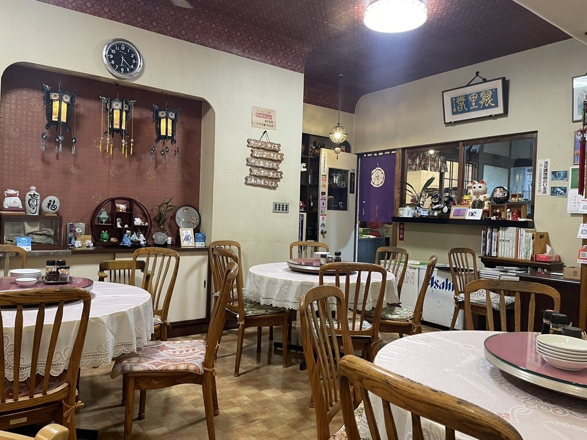
ホールの丸テーブルと提灯
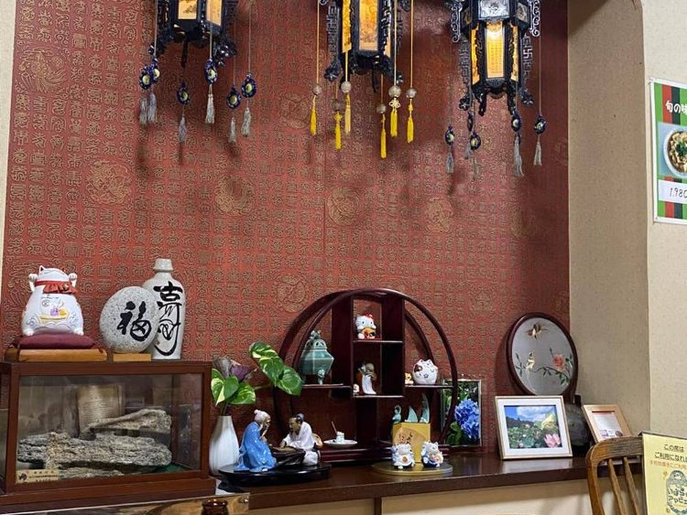
壁のランタンと飾り棚
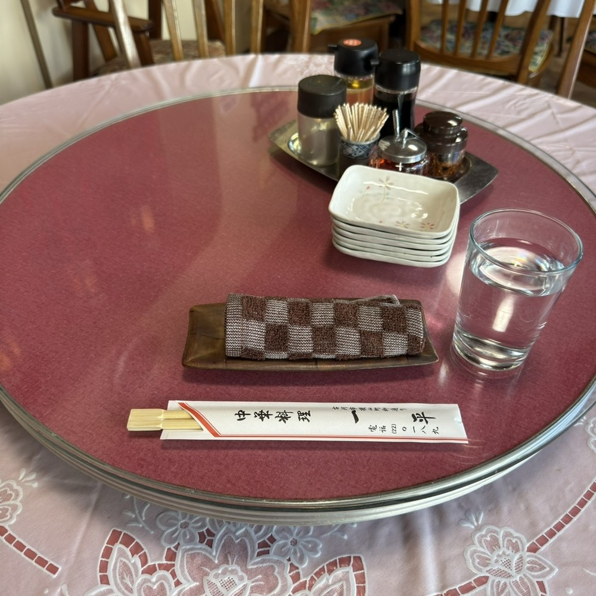
丸テーブルの回転台
当店は、JR宇都宮線 古河駅の西口から歩いて8分ほどの、細い路地の奥にございます。
| 駐車場 | 店の東側の通り沿いに2台分ございます。駐車場から店までは、歩いて20秒ほどです。 |
|---|---|
| 目印 | 赤いネオン管の「中華料理」の文字と、緑のネオンの「一平」の看板でございます。赤白の日除けと、刈り込んだ黒松の生垣も合わせてお探しくださいませ。 |
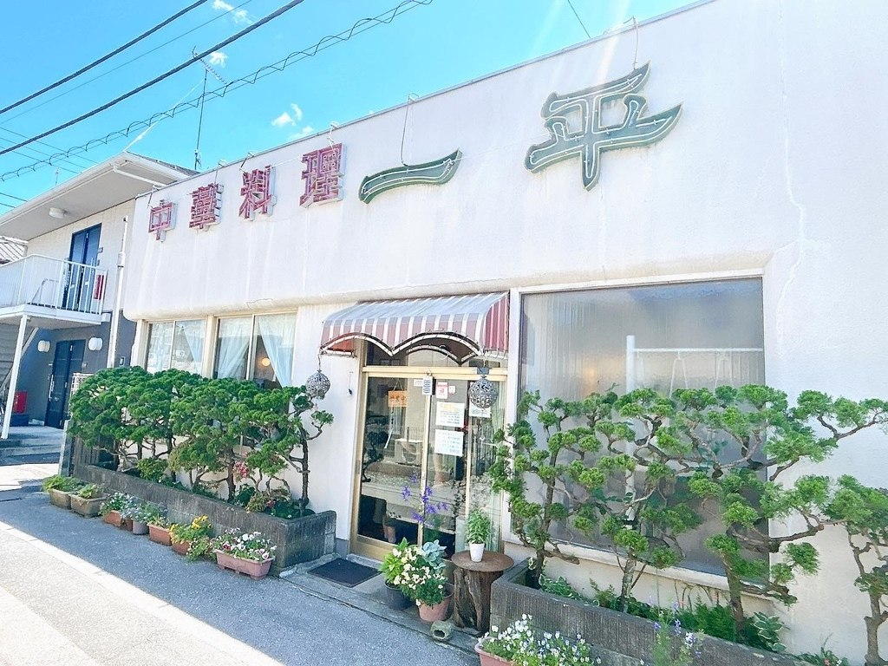
昼の外観
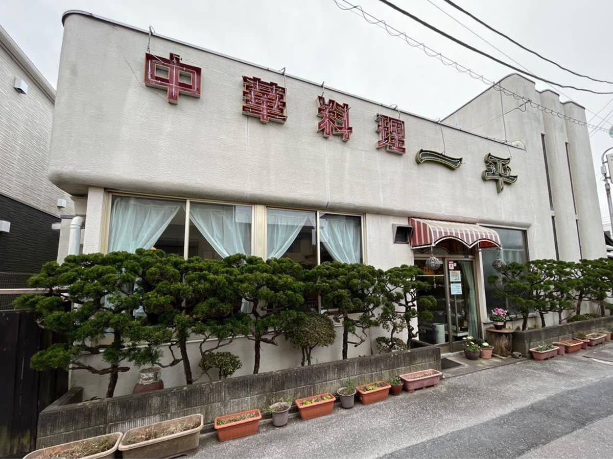
看板の文字
| 住所 | 〒306-0022 茨城県古河市横山町1-11-23 |
|---|---|
| 電話 | 0280-22-0189 |
| 営業時間 | 昼 11:30〜14:30（L.O. 14:00）／夜 17:00〜21:00（L.O. 20:30） |
| 定休日 | 月曜日・第3火曜日1月・8月・12月は変更ございます |
| 駐車場 | 有（2台・店の東側の通り沿い） |
| お支払い | 現金・電子マネー・PayPay・d払い・楽天ペイ・au PAYクレジットカードのお取り扱いはございません |